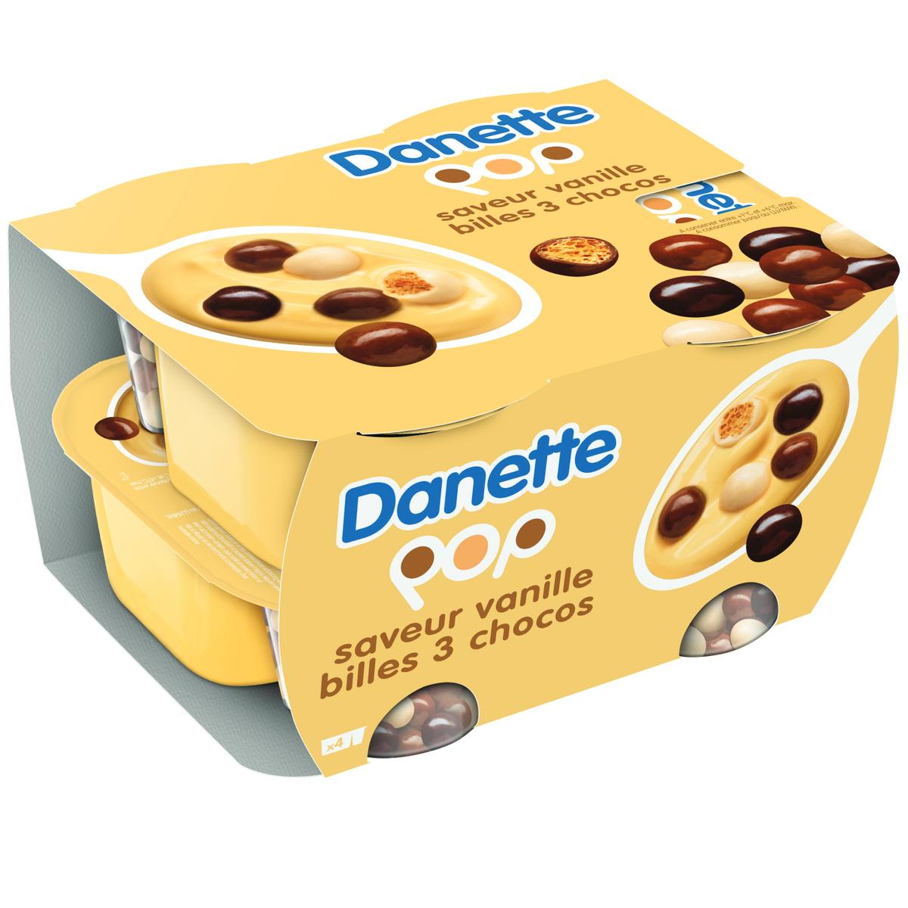

| Mamie Nova |
Amande |
Crème |
Cette crème dessert est super onctueuse, elle a des inclusions d'amande pour un max de gourmandise |
 |
| Pistache |
Fondante |
Texture vraiment fun : ça fond dans la bouche, littéralement. Le goût est délicieux, évidemment |
 |
| Rose Litchi |
Yaourt (morceaux) |
Saveur originale, pour les audacieux. Il y a des morceaux de litchi, rien d'horripilant (les morceaux c'est pas bon mais ici c'est ok) |
 |
| Bonne Maman |
Chocolat au lait |
Mousse |
Miam le sucre. Il y a également les versions chocolat et chocolat noir, pour les amateurs de chocolat |
 |
| Danette |
Vanille billes 3 chocos |
Crème |
Ça croustille, c'est bon |
 |
| Andros |
Pomme Vanille |
Compote |
Parce que la version pomme est trop basique |
 |